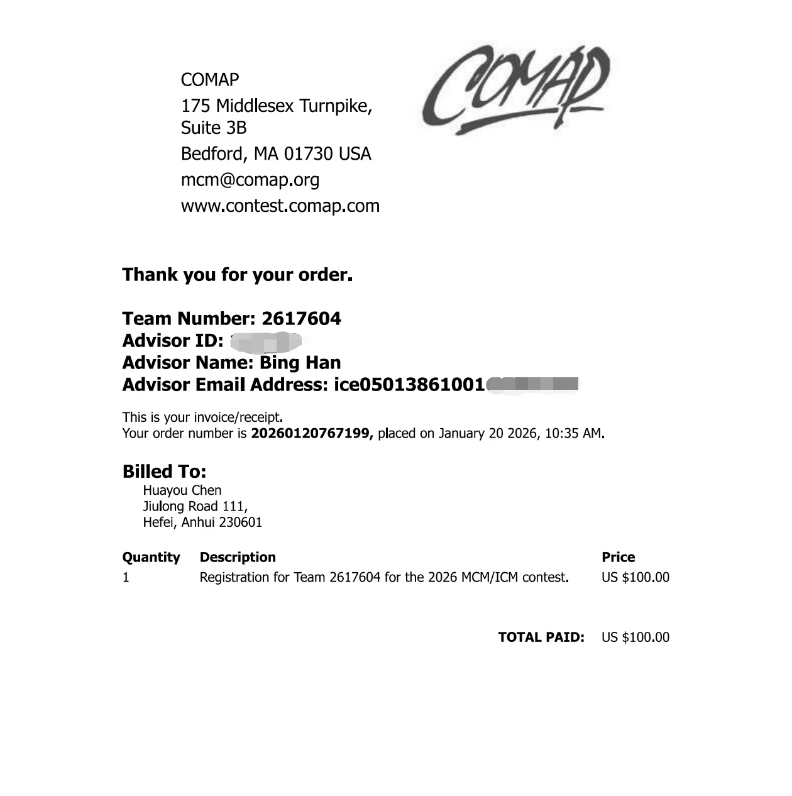
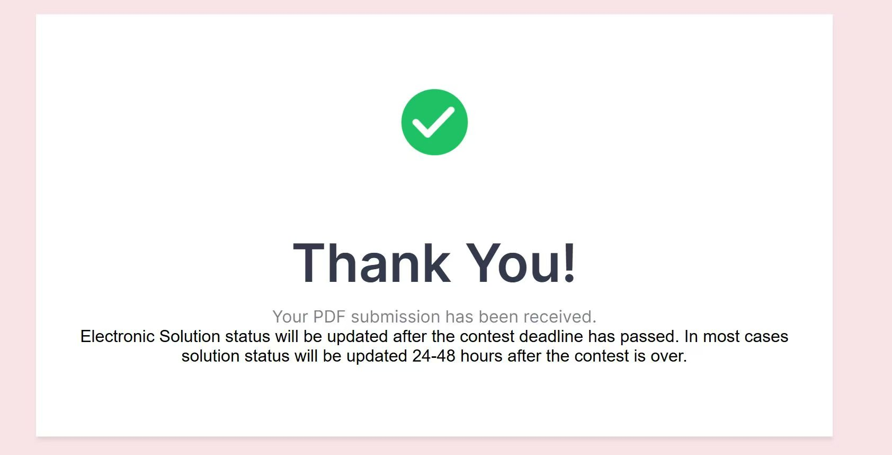

相关经历
美国大学生数学建模竞赛（MCM/ICM）2026
2026年


身份：编程手
工作内容：
- 参与选题讨论，完成问题拆解、模型选型与逻辑梳理
- 协助完成数据整理、基础统计分析、模型假设与公式推导
- 数据预处理，将建模中杂乱的原始数据（缺失值、异常值、格式混乱）进行清洗
- 将数学公式转化为代码，与建模手沟通，明确模型的数学逻辑
- 验证计算结果，调试与优化代码
收获与思考：
- 建立「实际问题→抽象建模→求解验证→结论解释」的完整思维链
- 体会统计模型、逻辑推理与团队分工的重要性
- 意识到编程工具（Python/Matlab/R语言等）对建模效率的关键作用，明确后续学习重点
安徽大学大学生数学建模协会
- 参与协会基础培训：学习数学建模基础、常见模型，跟学长一起研究项目
- 参与社团讨论，积累建模思路与团队协作经验
课程学习经历
- 学习高等数学，后续学习线性代数、概率论与数理统计等核心课程，夯实数学与统计理论基础
- 注重理论与应用结合，主动将课堂知识与建模、数据处理场景联动思考